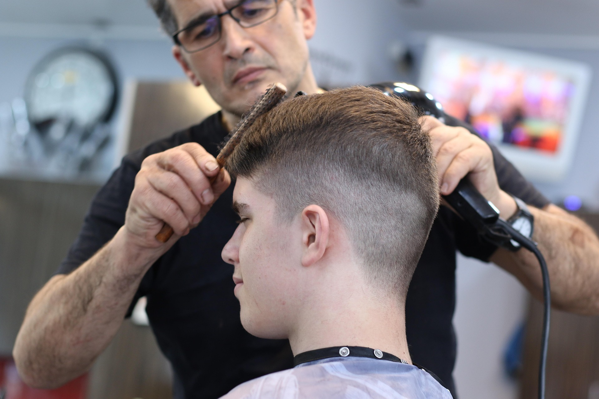
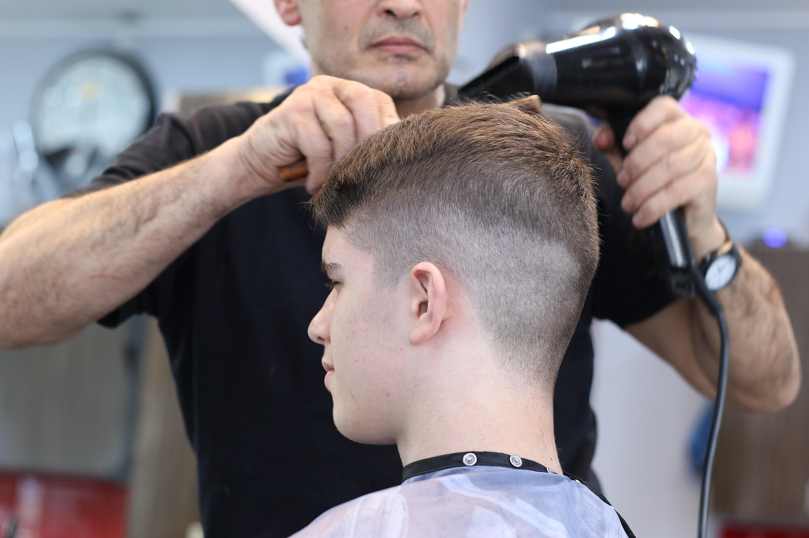
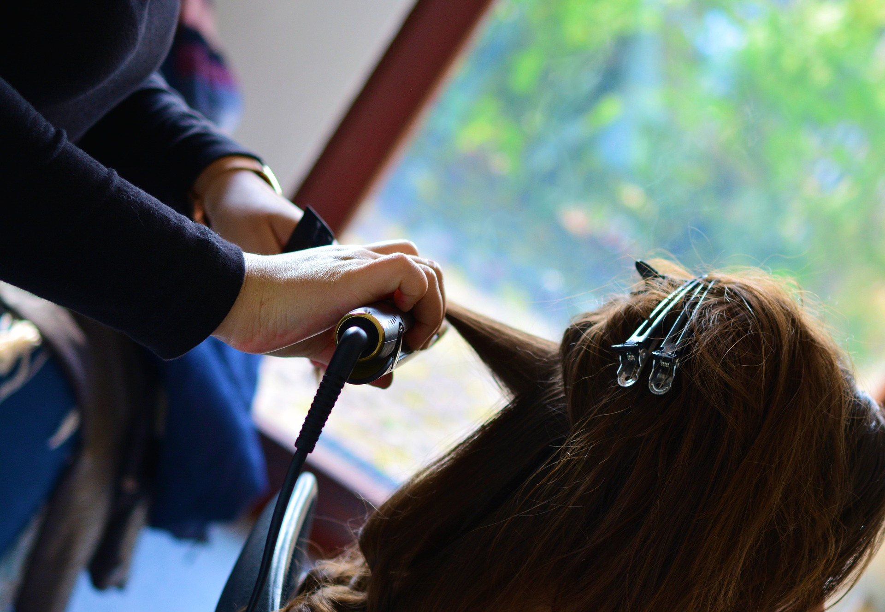
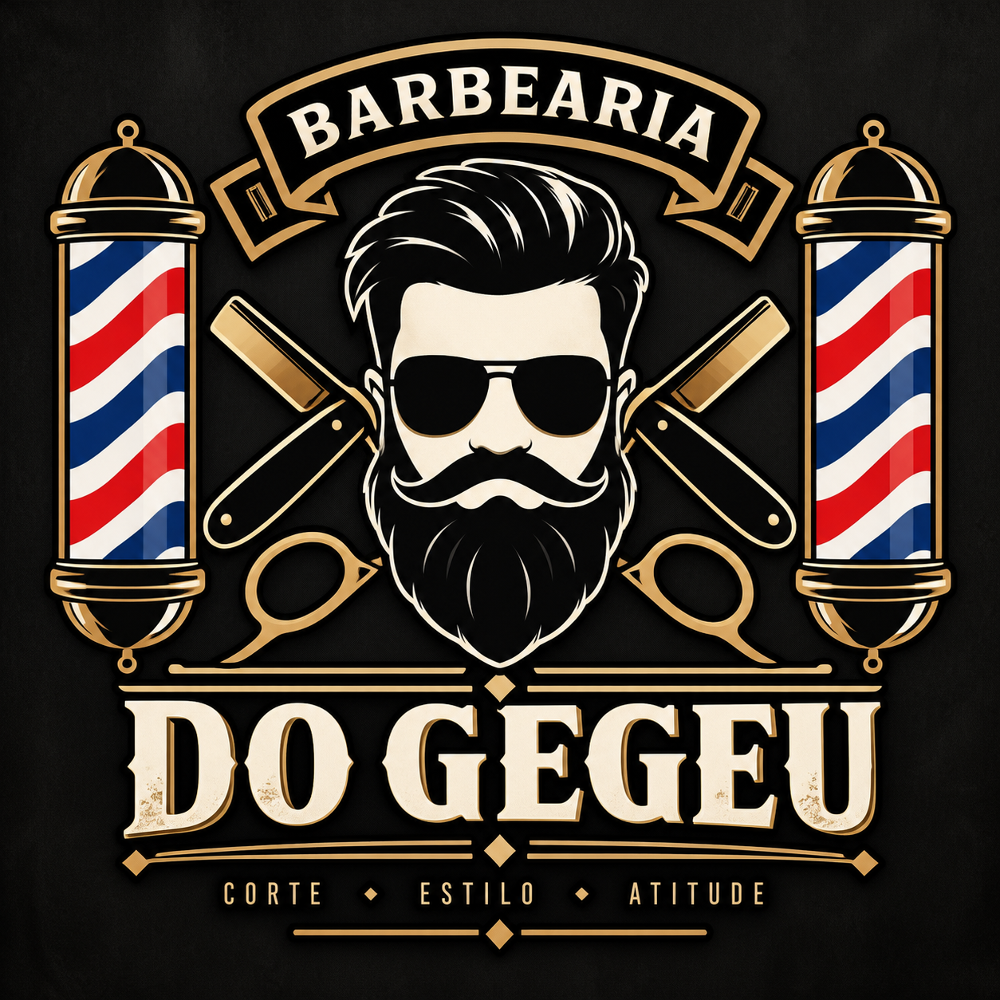

A Barbearia do Gegeu nasceu do sonho de Gegeu, um barbeiro apaixonado por estilo, cuidado e pelo tradicional ambiente das barbearias. O que começou como um pequeno espaço para atender amigos e familiares foi crescendo graças à qualidade do atendimento e à confiança dos clientes. Com o passar dos anos, a Barbearia do Gegeu se tornou um ponto de encontro para quem busca um bom corte, cuidado com a aparência e um ambiente descontraído. Hoje, a barbearia combina o estilo clássico das antigas barbearias com técnicas e tendências modernas. Nosso objetivo é fazer com que cada cliente saia satisfeito, sentindo-se renovado e com o visual do seu jeito.
Corte masculino — Cortes tradicionais, modernos e personalizados. Corte feminino — Estilos variados para mulheres de todas as idades. Corte infantil — Cortes para crianças com atendimento tranquilo e divertido. Barba — Modelagem e acabamento completo da barba. Corte + Barba — Pacote completo para renovar o visual. Acabamento — Ajustes no pezinho, costeletas e contornos. Sobrancelha — Design e limpeza da sobrancelha masculina. Pigmentação de barba — Técnica para realçar e definir a barba. Platinado/Descoloração — Mudança de visual para quem quer um estilo mais marcante. Hidratação capilar — Cuidados para manter os cabelos saudáveis e bem tratados.
Na Barbearia do Gegeu, cada cliente recebe um atendimento personalizado. Antes de começar, o barbeiro conversa com o cliente para entender o estilo desejado e encontrar o corte que mais combina com ele.


